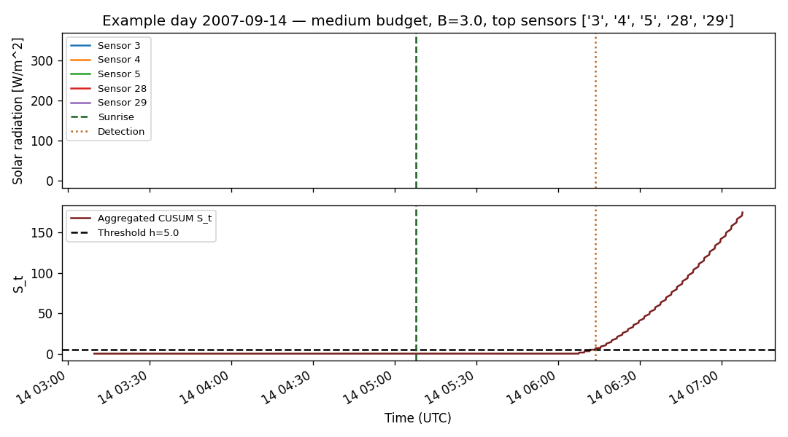

Real-data validation of the resource-constrained multi-sensor change-point detection framework introduced in Covert Change-Point Detection with Resource-Constrained Multi-Sensor Sampling. The system model is always a multi-sensor network with M available sensors; the detector selects an active subset S(t) under sampling and communication constraints. The budget regime controls the cardinality of S(t). The true change point nu_d is the astronomical sunrise on day d; the detector returns a stopping time tau_d from solar-radiation observations. Per-sensor informativeness is summarized by the Gaussian divergence D_i = (mu_1 - mu_0)^2 / (2 sigma^2).
| Field | Value |
|---|---|
| Dataset | SensorScope environmental monitoring dataset |
| Source | https://zenodo.org/records/2654726 |
| Deployment | Grand-St-Bernard |
| Variable | Solar Radiation [W/m^2] |
| Units | W/m^2 |
| Valid sensors (full set) | 2, 25, 28, 29, 3, 31, 32, 4, 5 |
| Valid days | 43 |
| Sampling interval (s) | 120.000 |
Sunrise times computed with astral.sun.sun at latitude 45.8694, longitude 7.1706 (timezone Europe/Zurich). The ground-truth file contains 43 daily records. Detection delays are computed in UTC; signed_delay = tau_d - nu_d.
The unified experiment always loads the full set of valid sensors. A dynamic budget policy then selects the active subset S(t) at every timestamp under the explicit budget constraint sum_{i in S(t)} (C_i + T_i) <= B:
B = 1.0 (unit-cost approximation).B = 3.0 (unit-cost approximation).B = |valid sensors| so the constraint is non-binding.Sensing and communication costs C_i, T_i are not measured in the dataset; the report applies the explicit unit-cost assumption C_i = 1.0, T_i = 0.0 stored in output/json/sensor_costs.json. The selection policy ranks available sensors by D_i / (C_i + T_i) and greedily picks S(t) while the cumulative cost stays within B.
| Field | Value |
|---|---|
| Budget regime | medium |
| Description | Medium budget. The dynamic budget policy enforces sum_{i in S(t)} (C_i + T_i) <= B with B = 3.0 under the unit-cost approximation, so up to three available sensors are activated per timestamp. The active subset may vary over time. |
| Budget value B | 3.000 |
| Budget constraint | sum_{i in S(t)} (C_i + T_i) <= B |
| Cost model | unit_cost_assumption |
| Unit cost assumption | True |
| Dynamic selection | True |
| Selection policy | Dynamic information-per-cost selection. At each timestamp t, the policy ranks the available sensors by D_i / (C_i + T_i) and greedily selects S(t) under the budget constraint. |
| Score | D_i_per_total_cost |
| Candidate sensors | 2, 25, 28, 29, 3, 31, 32, 4, 5 |
| Sensors ever selected | 2, 25, 28, 29, 3, 31, 32, 4, 5 |
| Most frequently selected sensors | 3 (n=3829), 4 (n=3829), 5 (n=3250), 28 (n=2525), 29 (n=2522), 32 (n=2522), 25 (n=2520), 31 (n=2520), 2 (n=2429) |
| Detector input mode | multi_sensor |
| Sensor ID | C_i | T_i | C_i + T_i | Source |
|---|---|---|---|---|
| 2 | 1.000 | 0.000 | 1.000 | unit_cost_assumption |
| 25 | 1.000 | 0.000 | 1.000 | unit_cost_assumption |
| 28 | 1.000 | 0.000 | 1.000 | unit_cost_assumption |
| 29 | 1.000 | 0.000 | 1.000 | unit_cost_assumption |
| 3 | 1.000 | 0.000 | 1.000 | unit_cost_assumption |
| 31 | 1.000 | 0.000 | 1.000 | unit_cost_assumption |
| 32 | 1.000 | 0.000 | 1.000 | unit_cost_assumption |
| 4 | 1.000 | 0.000 | 1.000 | unit_cost_assumption |
| 5 | 1.000 | 0.000 | 1.000 | unit_cost_assumption |
| Rank | Sensor ID | D_i | C_i + T_i | D_i / (C_i + T_i) |
|---|---|---|---|---|
| 1 | 5 | 1.037 | 1.000 | 1.037 |
| 2 | 25 | 0.827 | 1.000 | 0.827 |
| 3 | 4 | 0.716 | 1.000 | 0.716 |
| 4 | 29 | 0.694 | 1.000 | 0.694 |
| 5 | 32 | 0.631 | 1.000 | 0.631 |
| 6 | 31 | 0.584 | 1.000 | 0.584 |
| 7 | 2 | 0.538 | 1.000 | 0.538 |
| 8 | 28 | 0.523 | 1.000 | 0.523 |
| 9 | 3 | 0.467 | 1.000 | 0.467 |
| Sensor | D_i | mu_0 | mu_1 | sigma^2 | Valid days | Missing rate |
|---|---|---|---|---|---|---|
| 2 | 0.538 | 0.802 | 65.160 | 3847.596 | 27 | 0.100 |
| 25 | 0.827 | 1.080 | 80.036 | 3770.858 | 28 | 0.067 |
| 28 | 0.523 | 1.137 | 86.113 | 6903.333 | 28 | 0.067 |
| 29 | 0.694 | 1.495 | 102.808 | 7392.910 | 28 | 0.067 |
| 3 | 0.467 | 0.651 | 66.751 | 4678.988 | 42 | 0.023 |
| 31 | 0.584 | 0.983 | 83.712 | 5857.833 | 28 | 0.067 |
| 32 | 0.631 | 0.541 | 76.198 | 4536.194 | 28 | 0.067 |
| 4 | 0.716 | 1.583 | 104.414 | 7379.697 | 42 | 0.023 |
| 5 | 1.037 | 1.120 | 23.657 | 244.863 | 36 | 0.077 |
The main detector is a multi-sensor one-sided CUSUM that uses fixed global empirical Gaussian parameters per sensor. These parameters (mu_{0,i}, mu_{1,i}, sigma_i^2) are estimated once from the SensorScope sunrise dataset and stored in output/json/sensor_informativeness.json; the same parameters are reused unchanged for every test day. The astronomical sunrise of each day is used only to extract the evaluation window and to score detections; it is not used to estimate any detector parameter in this mode. The per-sensor Gaussian divergence D_i = (mu_{1,i} - mu_{0,i})^2 / (2 sigma_i^2) is computed from the same global parameters used by the detector. At each timestamp, the per-sensor Gaussian log-likelihood ratio is averaged over the active sensors that report a finite reading and accumulated by a one-sided CUSUM:
llr_{i,t} = ((x_{i,t} - mu_{0,i})^2 - (x_{i,t} - mu_{1,i})^2) / (2 sigma_i^2)
L_t = mean_{i in S_t} llr_{i,t}
S_t = max(0, S_{t-1} + L_t)
tau = min { t : S_t >= h }At each timestamp t, the dynamic budget policy selects S(t) by greedy information-per-cost ranking under the constraint sum_{i in S(t)} (C_i + T_i) <= B. The detector then computes the per-sensor Gaussian LLR llr_{i,t} = ((x_{i,t} - mu_{0,i})^2 - (x_{i,t} - mu_{1,i})^2) / (2 sigma_i^2) using fixed global empirical parameters and averages over the sensors in S(t) that report a finite reading. The aggregated evidence drives a one-sided CUSUM S_t = max(0, S_{t-1} + L_t) with no drift; detection occurs when S_t >= h.
| Parameter | Value |
|---|---|
| Detector mode | global_gaussian_llr |
| Detector name | dynamic_budget_gaussian_llr_cusum_multi_sensor |
| Evidence type | gaussian_log_likelihood_ratio |
| Aggregation | mean_llr_over_dynamic_subset |
| Parameter source | global_empirical_sensor_parameters |
| Global parameter file | output/json/sensor_informativeness.json |
| Threshold h | 5.000 |
| Pre window (min) | 120 |
| Post window (min) | 120 |
| Sync freq | 2min |
| Tolerance (min) | 15 |
| Metric | Value |
|---|---|
| valid_days_count | 43 |
| detected_days_count | 42 |
| missed_detection_count | 1 |
| false_alarm_count | 0 |
| mean_signed_delay_minutes | 62.972 |
| median_signed_delay_minutes | 65.339 |
| mean_absolute_error_minutes | 62.972 |
| median_absolute_error_minutes | 65.339 |
| std_signed_delay_minutes | 16.454 |
| min_signed_delay_minutes | 28.398 |
| max_signed_delay_minutes | 113.135 |
| mean_active_sensors_per_timestamp | 1.012 |
| mean_budget_used_per_timestamp | 1.036 |

| Date | Sunrise (local) | Detected (local) | Signed delay [min] | |Error| [min] | Status | False alarm | Missed | Sensors ever selected | Avg |S(t)| | Avg budget | Grid pts |
|---|---|---|---|---|---|---|---|---|---|---|---|
| 2007-09-13 | 2007-09-13T07:06:38.190498+02:00 | None | n/a | n/a | missed_detection | False | True | 0.000 | n/a | 0 | |
| 2007-09-14 | 2007-09-14T07:07:52.614310+02:00 | 2007-09-14T08:13:47+02:00 | 65.906 | 65.906 | detected | False | False | 3,4 | 1.000 | 1.000 | 240 |
| 2007-09-15 | 2007-09-15T07:09:07.087765+02:00 | 2007-09-15T08:03:32+02:00 | 54.415 | 54.415 | detected | False | False | 2,3,4 | 1.000 | 1.000 | 360 |
| 2007-09-16 | 2007-09-16T07:10:21.619640+02:00 | 2007-09-16T08:15:39+02:00 | 65.290 | 65.290 | detected | False | False | 2,3,4 | 1.000 | 1.000 | 360 |
| 2007-09-17 | 2007-09-17T07:11:36.219033+02:00 | 2007-09-17T08:15:35+02:00 | 63.980 | 63.980 | detected | False | False | 2,3,4 | 1.000 | 1.000 | 360 |
| 2007-09-18 | 2007-09-18T07:12:50.895336+02:00 | 2007-09-18T09:05:59+02:00 | 113.135 | 113.135 | detected | False | False | 2,3,4 | 1.000 | 1.000 | 360 |
| 2007-09-19 | 2007-09-19T07:14:05.658195+02:00 | 2007-09-19T08:19:29+02:00 | 65.389 | 65.389 | detected | False | False | 2,3,4 | 1.000 | 1.000 | 360 |
| 2007-09-20 | 2007-09-20T07:15:20.517481+02:00 | 2007-09-20T08:21:45+02:00 | 66.408 | 66.408 | detected | False | False | 2,3,4,5 | 1.000 | 1.000 | 481 |
| 2007-09-21 | 2007-09-21T07:16:35.483256+02:00 | 2007-09-21T08:21:40+02:00 | 65.075 | 65.075 | detected | False | False | 2,3,4,5 | 1.000 | 1.000 | 480 |
| 2007-09-22 | 2007-09-22T07:17:50.565738+02:00 | 2007-09-22T08:23:37+02:00 | 65.774 | 65.774 | detected | False | False | 2,3,4,5 | 1.000 | 1.000 | 480 |
| 2007-09-23 | 2007-09-23T07:19:05.775271+02:00 | 2007-09-23T08:08:28+02:00 | 49.370 | 49.370 | detected | False | False | 2,3,4,5 | 1.000 | 1.000 | 480 |
| 2007-09-24 | 2007-09-24T07:20:21.122283+02:00 | 2007-09-24T08:25:30+02:00 | 65.148 | 65.148 | detected | False | False | 2,3,4,5 | 1.000 | 1.000 | 480 |
| 2007-09-25 | 2007-09-25T07:21:36.617257+02:00 | 2007-09-25T08:48:36+02:00 | 86.990 | 86.990 | detected | False | False | 2,3,4,5 | 1.000 | 1.000 | 481 |
| 2007-09-26 | 2007-09-26T07:22:52.270695+02:00 | 2007-09-26T08:50:35+02:00 | 87.712 | 87.712 | detected | False | False | 2,25,28,29,3,31,32,4,5 | 1.051 | 1.051 | 1032 |
| 2007-09-27 | 2007-09-27T07:24:08.093076+02:00 | 2007-09-27T07:52:32+02:00 | 28.398 | 28.398 | detected | False | False | 2,25,28,29,3,31,32,4,5 | 1.000 | 1.000 | 1078 |
| 2007-09-28 | 2007-09-28T07:25:24.094824+02:00 | 2007-09-28T08:10:28+02:00 | 45.065 | 45.065 | detected | False | False | 2,25,28,29,3,31,32,4,5 | 1.000 | 1.000 | 1080 |
| 2007-09-29 | 2007-09-29T07:26:40.286271+02:00 | 2007-09-29T08:21:08+02:00 | 54.462 | 54.462 | detected | False | False | 2,25,28,29,3,31,32,4,5 | 1.013 | 1.013 | 1070 |
| 2007-09-30 | 2007-09-30T07:27:56.677611+02:00 | 2007-09-30T08:06:20+02:00 | 38.389 | 38.389 | detected | False | False | 2,25,28,29,3,31,32,4,5 | 1.013 | 1.013 | 1070 |
| 2007-10-01 | 2007-10-01T07:29:13.278867+02:00 | 2007-10-01T08:18:32+02:00 | 49.312 | 49.312 | detected | False | False | 2,25,28,29,3,31,32,4,5 | 1.087 | 1.087 | 986 |
| 2007-10-02 | 2007-10-02T07:30:30.099847+02:00 | 2007-10-02T08:24:03+02:00 | 53.548 | 53.548 | detected | False | False | 2,25,28,29,3,31,32,4,5 | 1.001 | 1.001 | 1080 |
| 2007-10-03 | 2007-10-03T07:31:47.150105+02:00 | 2007-10-03T08:06:27+02:00 | 34.664 | 34.664 | detected | False | False | 2,25,28,29,3,31,32,4,5 | 1.000 | 1.000 | 1081 |
| 2007-10-04 | 2007-10-04T07:33:04.438893+02:00 | 2007-10-04T08:50:28+02:00 | 77.393 | 77.393 | detected | False | False | 2,25,28,29,3,31,32,4,5 | 1.036 | 1.036 | 1049 |
| 2007-10-05 | 2007-10-05T07:34:21.975123+02:00 | 2007-10-05T08:17:29+02:00 | 43.117 | 43.117 | detected | False | False | 2,25,28,29,3,31,32,4,5 | 1.099 | 1.099 | 980 |
| 2007-10-06 | 2007-10-06T07:35:39.767316+02:00 | 2007-10-06T08:54:23+02:00 | 78.721 | 78.721 | detected | False | False | 25,28,29,3,31,32,4,5 | 1.143 | 1.143 | 848 |
| 2007-10-07 | 2007-10-07T07:36:57.823564+02:00 | 2007-10-07T08:44:54+02:00 | 67.936 | 67.936 | detected | False | False | 25,28,29,3,31,32,4,5 | 1.106 | 1.106 | 870 |
| 2007-10-08 | 2007-10-08T07:38:16.151474+02:00 | 2007-10-08T08:44:51+02:00 | 66.581 | 66.581 | detected | False | False | 25,28,29,3,31,32,4,5 | 1.141 | 1.141 | 841 |
| 2007-10-09 | 2007-10-09T07:39:34.758125+02:00 | 2007-10-09T08:16:15+02:00 | 36.671 | 36.671 | detected | False | False | 25,28,29,3,31,32,4,5 | 1.016 | 1.016 | 915 |
| 2007-10-10 | 2007-10-10T07:40:53.650020+02:00 | 2007-10-10T08:40:11+02:00 | 59.289 | 59.289 | detected | False | False | 25,28,29,3,31,32,4,5 | 1.136 | 1.136 | 843 |
| 2007-10-11 | 2007-10-11T07:42:12.833029+02:00 | 2007-10-11T08:49:44+02:00 | 67.519 | 67.519 | detected | False | False | 25,28,29,3,31,32,4,5 | 1.142 | 1.142 | 840 |
| 2007-10-12 | 2007-10-12T07:43:32.312346+02:00 | 2007-10-12T08:46:18+02:00 | 62.761 | 62.761 | detected | False | False | 25,28,29,3,31,32,4,5 | 1.087 | 1.087 | 883 |
| 2007-10-13 | 2007-10-13T07:44:52.092430+02:00 | 2007-10-13T08:36:13+02:00 | 51.348 | 51.348 | detected | False | False | 25,28,29,3,31,32,4,5 | 1.085 | 1.085 | 894 |
| 2007-10-14 | 2007-10-14T07:46:12.176956+02:00 | 2007-10-14T08:57:34+02:00 | 71.364 | 71.364 | detected | False | False | 25,28,29,3,31,32,4,5 | 1.000 | 1.000 | 960 |
| 2007-10-15 | 2007-10-15T07:47:32.568759+02:00 | 2007-10-15T09:01:43+02:00 | 74.174 | 74.174 | detected | False | False | 25,28,29,3,31,32,4,5 | 1.008 | 1.008 | 953 |
| 2007-10-16 | 2007-10-16T07:48:53.269781+02:00 | 2007-10-16T09:10:52+02:00 | 81.979 | 81.979 | detected | False | False | 25,28,29,3,31,32,4,5 | 1.076 | 1.076 | 885 |
| 2007-10-17 | 2007-10-17T07:50:14.281012+02:00 | 2007-10-17T09:03:37+02:00 | 73.379 | 73.379 | detected | False | False | 25,28,29,3,31,32,4,5 | 1.000 | 1.000 | 941 |
| 2007-10-18 | 2007-10-18T07:51:35.602438+02:00 | 2007-10-18T08:53:52+02:00 | 62.273 | 62.273 | detected | False | False | 25,28,29,3,31,32,4,5 | 1.073 | 1.073 | 889 |
| 2007-10-19 | 2007-10-19T07:52:57.232986+02:00 | 2007-10-19T08:59:31+02:00 | 66.563 | 66.563 | detected | False | False | 3,4,5 | 1.000 | 1.000 | 360 |
| 2007-10-20 | 2007-10-20T07:54:19.170461+02:00 | 2007-10-20T09:00:16+02:00 | 65.947 | 65.947 | detected | False | False | 2,25,28,29,3,31,32,4,5 | 1.000 | 1.000 | 1082 |
| 2007-10-21 | 2007-10-21T07:55:41.411496+02:00 | 2007-10-21T08:30:13+02:00 | 34.526 | 34.526 | detected | False | False | 2,25,28,29,3,31,32,4,5 | 1.119 | 1.119 | 963 |
| 2007-10-22 | 2007-10-22T07:57:03.951493+02:00 | 2007-10-22T09:06:50+02:00 | 69.767 | 69.767 | detected | False | False | 2,25,28,29,3,31,32,4,5 | 1.000 | 1.000 | 1007 |
| 2007-10-23 | 2007-10-23T07:58:26.784564+02:00 | 2007-10-23T08:58:17+02:00 | 59.837 | 59.837 | detected | False | False | 2,25,28,29,3,31,32,4,5 | 1.000 | 1.000 | 1080 |
| 2007-10-24 | 2007-10-24T07:59:49.903480+02:00 | 2007-10-24T09:24:01+02:00 | 84.185 | 84.185 | detected | False | False | 2,25,28,29,3,31,32,4,5 | 1.072 | 1.072 | 1003 |
| 2007-10-25 | 2007-10-25T08:01:13.299615+02:00 | 2007-10-25T09:12:16+02:00 | 71.045 | 71.045 | detected | False | False | 2,3,4,5 | 1.000 | 1.000 | 480 |
output/json/sensor_costs.json, so the dynamic information-per-cost score reduces to D_i.